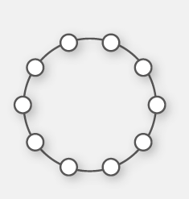

10
UNIDADE 1 - A matemática no cotidiano
 Cataratas do Iguaçu, PR, 2017. ( MonicaVolpin/Pixabay )
Cataratas do Iguaçu, PR, 2017. ( MonicaVolpin/Pixabay )
11
A Matemática está presente em várias situações no nosso cotidiano. Pode, por exemplo, nos ajudar a entender melhor a cidade em que vivemos.
Veja algumas informações sobre Foz do Iguaçu e seus pontos turísticos.
► De acordo com o Censo de 2010, a população era de 256 088 habitantes.
► O Parque Nacional do Iguaçu possui mais de 600 mil hectares de áreas protegidas e outros 400 mil em florestas ainda primitivas.
► A Usina Hidrelétrica de Itaipu foi construída para reter o curso do Rio Paraná. A barragem é uma imensa estrutura de concreto sobre a qual estão instalados os dutos e as unidades geradoras de energia elétrica.
► O Parque das Aves apresenta mais de 800 animais.
► Em 2019, Foz do Iguaçu foi a 4.ª cidade do país mais visitada por estrangeiros.
CONVERSE
1. No texto acima, há várias informações numéricas sobre Foz do Iguaçu. O que esses números representam?
2. Você conhece alguma informação numérica sobre a cidade onde mora?
3. Ao observarmos a fotografia da Usina de Itaipu, podemos perceber que sua construção lembra algumas fi guras geométricas não planas. Em sua cidade há monumentos que lembram fi guras geométricas não planas?
12

Sequências
Ao observar ao nosso redor, podemos perceber que algumas situações obedecem a um padrão, que pode ser representado de várias formas.
Veja a seguir alguns exemplos nos quais podemos encontrar um padrão nas sequências apresentadas.
► 1.ª sequência
► 2.ª sequência

1.Troque ideias com seus colegas e professor e, no caderno, representem a próxima sequência em cada uma das situações. Anote também as conclusões a que vocês chegaram.
Também é possível determinarmos sequências numéricas, ou seja, números que apresentam um determinado padrão de um termo para o outro.
Observe:
► 1.ª sequência numérica
1, 3, 5, 7, 9, 11, 13, ...
► 2.ª sequência numérica
0, 2, 4, 6, 8, 10, 12, ...
► 3.ª sequência numérica
1, 8, 15, 22, 29, 36, 43, ...
2. Troque ideias com seus colegas e professor e responda às questões a seguir em seu caderno.
a) Quais os próximos dois termos de cada uma das sequências acima?
b) Como é chamada a 1.ª sequência numérica apresentada? E a 2.ª?
Uma sequência pode ser finita quando parar num determinado termo, ou infinita quando continuar indefinidamente. Nesse caso, usa-se reticên-cias para indicar que o padrão segue se repetindo.
13
Sequência dos números naturais
Os números estão presentes em vários momentos do nosso cotidiano. No contexto acima, podemos identificar exemplos nos quais os números foram usados para expressar situações distintas.
1.Troque ideias com o seu colega e com o professor, em seguida responda às questões a seguir em seu caderno.
a) Na situação apresentada, que valor expressa uma medida?
b) Em que momento um número foi usado para indicar uma quantidade?
E um código?
c) Em que momento o número representa uma situação de ordem?
Podemos usar os números naturais para representar uma quantidade, um código, uma ordem ou uma medida.
A sequência dos números naturais é representada por: 0, 1, 2, 3, 4, 5, 6, 7, 8, 9, 10, 11, 12, 13, 14, ...
Na sequência dos números naturais, o antecessor é o que vem imediatamente antes de um número e o sucessor é o que vem imediatamente depois.
Todo número natural, com exceção do zero, tem um antecessor.
Observe:
► O antecessor de 8 é 7.
► O sucessor de 12 é 13.
14
2. Descubra qual o número que cada um está pensando. Depois, registre-os em seu caderno.
O sucessor de 999.
O antecessor de 511.
O sucessor do sucessor de 698.
O antecessor do antecessor de 801.
Representar, comparar e ordenar números naturais
Os números naturais podem ser representados em uma linha reta deno-minada reta numérica. Observe a seguir.
0, 1, 2, 3, 4, 5, 6, 7, 8, 9, 10, 11
Nessa forma de representação, cada número natural corresponde a um ponto que, a partir do zero, está separado do anterior por distâncias iguais.
Nesse caso, é possível visualizar facilmente as relações maior que (>), menor que (<) ou igual a (=) entre dois números naturais quaisquer. Note que o número que se encontra à esquerda é sempre menor que o número da direita.
3. Em seu caderno, substitua cada quadradinho por um dos símbolos =, > e > , = tornando a sentença verdadeira.
a) 35 ■ 53
b) 89 ■ 89
c) 730 ■ 73
d) 145 ■ 154
e) 231 ■ 241
f) 341 ■ 341
Números consecutivos
Na sequência dos números naturais, são chamados de consecutivos dois ou mais números seguidos, por exemplo: 13, 14 e 15. No quadro a seguir, em cada linha, temos representados 3 números consecutivos. Observe o modelo.
| 355 | 356 | 357 |
4. Agora, em seu caderno, copie o quadro, substituindo o símbolo ■ com os números que estão faltando. Considere que as letras representam um número natural diferente de zero.
| 521 | ■ | ■ |
| t | ■ | ■ |
| ■ | 2000 | ■ |
14
UNIDADE 1 - CAPÍTULO 1
ENCONTRE SOLUÇÕES
1.Observe a sequência de figuras.

► Desenhe, no caderno, a próxima figura dessa sequência.
2. Observe o colar de Márcia que é formado por botões e responda às questões no caderno.

a) Dos botões que estão dentro do porta-joias, quantos são azuis? E vermelhos?
b) Quantos botões vermelhos formam esse colar? E azuis?
c) O colar é formado de quantos botões ao todo?
3. Observe a sequência de símbolos a seguir e escreva, no caderno, os próximos quatro símbolos dessa sequência.

4. Observe as sequências de figuras a seguir.
a)

► Quantos triângulos terá a 5.ª figura dessa sequência? E quantos quadrados?
b)

► Quantos quadrados terá a 5.ª figura dessa sequência? E quantos triângulos?
5. Nas figuras a seguir, os sólidos são formados por cubinhos.

► Quantos cubinhos formará a 4.ª figura?
6. Observe as sequências numéricas a seguir e escreva, no caderno, os dois próximos termos de cada uma.
a) 1, 1, 2, 1, 3, 1, 4, 1, 5, 1, 6, 1, ...
b) 0, 8, 16, 24, 32, 40, 48, 56, ...
c) 3, 7, 12, 18, 25, 33, 42, 52, ...
d) 47, 42, 37, 32, 27, 22, 17, ...
7. Responda no caderno:
a) É possível escrevermos o menor de todos os números naturais? Qual?
b) É possível escrevermos o maior de todos os números naturais? Por quê?
c) Qual o único número natural que não possui antecessor?
8. No caderno, escreva por extenso cada expressão.
a) 12 > 10
b) 46 = 46
c) 67 < 69
9. Desenhe, no caderno, uma reta numérica e represente os números a seguir.
3, 5, 7, 8, 11
15
UNIDADE 1 - CAPÍTULO 1
10. Leia o texto a seguir e depois responda às questões em seu caderno.
Tartarugas da Amazônia são protegidas de extinção em 40 anos do
PQA
Brasília (30/12/2019) - Medidas protetivas adotadas há 40 anos no âmbito
do Programa Quelônios da Amazônia (PQA) vêm mantendo a
tartaruga-da-amazônia ( Podocnemis expansa) e o
tracajá ( Podocnemis unifilis) fora da lista de
animais brasileiros em risco de extinção.
Nesse período, mais de 80 milhões de filhotes de quelônios amazônicos foram protegidos de fatores como a exploração econômica predatória e a destruição de habitats. O número é resultado de ações como manejo, monitoramento, fisca-lização e pesquisa com animais realizadas conjuntamente por analistas e fiscais ambientais, população ribeirinha e instituições parceiras.
Para o coordenador-geral de Gestão da Biodiversidade, Florestas e Recupe-ração Ambiental do Ibama, Rodrigo Dutra, o programa também proporcionou a regulamentação da instalação de criadouros comerciais de tartarugas-da-amazônia e tracajás em suas áreas naturais de ocorrência. “Além disso, o PQA regulamentou o comércio dessas espécies, quando oriundas de cativeiro autorizado, utilizando-se da premissa do uso sustentável da fauna como forma de gerar alternativa de renda e auxiliar na redução da exploração ilegal dos quelônios amazônicos”, disse Dutra.
[…]
a) Sobre o que trata o texto?
b) Você acha importante que esse tipo de proteção seja realizado? Por quê?
c) No texto, os números naturais assumiram que funções?
d) Quais os números naturais citados no texto?
(OBMEP) Escreva os números de 0 a 9 nos círculos, de forma que eles cresçam no sentido anti-horário. Em seguida, subtraia 1 dos números ímpares e some 1 aos números pares. Escolhendo três círculos consecutivos, qual é a maior soma que se pode obter?
a) 19
b) 21
c) 23
d) 24
e) 25
12. (OBMEP) Renata montou uma sequência de triângulos com palitos de fósforo, seguindo o padrão indicado na figura. Quantos palitos ela vai usar para construir o quinto triângulo da sequência?
a) 36
b) 39
c) 42
d) 45
e) 48